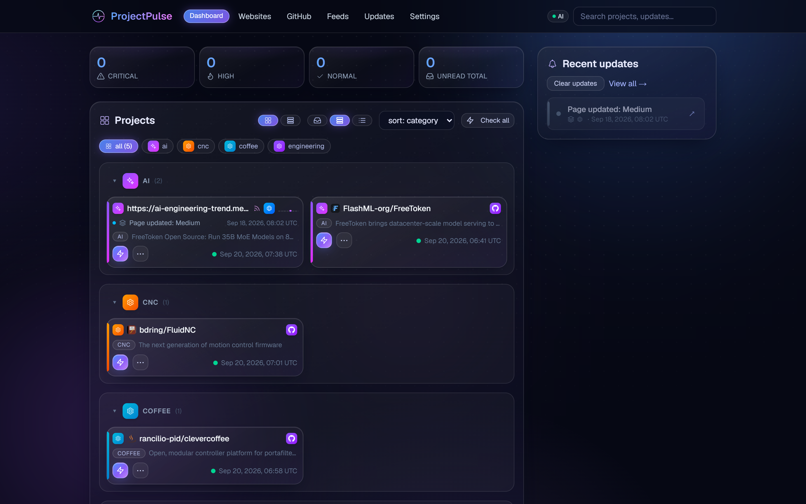
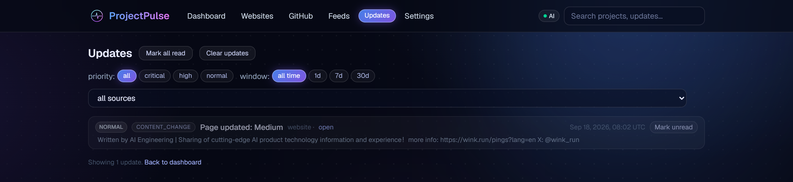
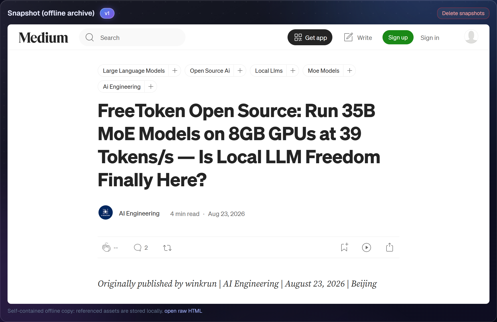
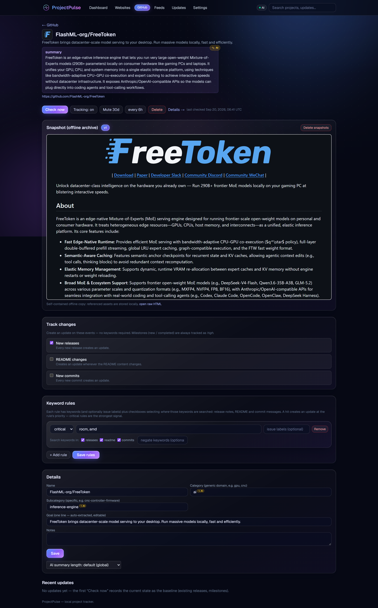
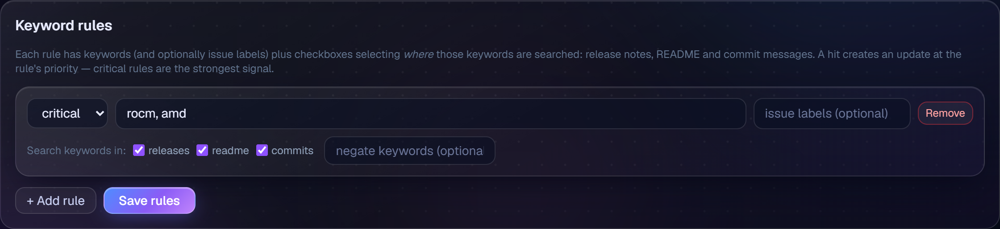
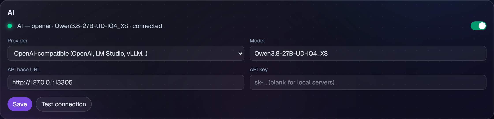

Everything you watch, one priority-sorted feed
Website snapshots
Capture project pages for offline reading. Scheduled checks detect changes — every change becomes a snapshot version plus a diff in your updates feed. Feeds are discovered automatically when a site publishes one.
GitHub tracking
New releases, README changes and commits per repo — plus milestones and issue-label watching. Major version bumps and stable releases are escalated automatically; no keywords needed.
RSS & Atom feeds
Feeds are first-class sources — often the most reliable way to track a project's changelog. New entries land in the same feed, with the same rules.
Priority keyword rules
Word-boundary matching with negation and priorities: flag anything mentioning kernel, linux as critical. With AI on, a semantic pass catches related text that never uses the exact words.
Local AI (optional)
Change summaries, importance classification, goal extraction and category assignment — via local Ollama (bundled in Docker), OpenAI-compatible, Anthropic or MCP. Fully functional without any AI.
Dashboard & search
Projects grouped by AI-assigned category, activity sparklines, unread counters, digest windows (1d/7d/30d), full-text search over everything, JSON backup/restore.
Screenshots






Run it in 30 seconds
Any Docker host — x86-64 or arm64. AI (local Ollama) comes bundled; the default model downloads automatically on first boot. All your data stays on your machine.
# Docker Compose (bundled Ollama + one-shot model pull)
git clone https://github.com/Pantera87/ProjectPulse
cd ProjectPulse && docker compose up -d
# open http://localhost:4701
# …or just the app (bring your own Ollama / use a remote provider)
docker run -d --name projectpulse -p 4701:4701 -v pp_data:/data \
pantera87/projectpulse:latest
Then add your first project: a URL, owner/repo or a feed.
Set AUTH_PASSWORD to enable a login screen,
WEBHOOK_URL to forward updates to ntfy/Pushover, or leave
AI off entirely — the app is fully functional without it.
Full configuration →
Built in the open
ProjectPulse is MIT-licensed open source, built with Next.js, React and SQLite. Found a bug or want a feature? Open an issue or send a pull request.